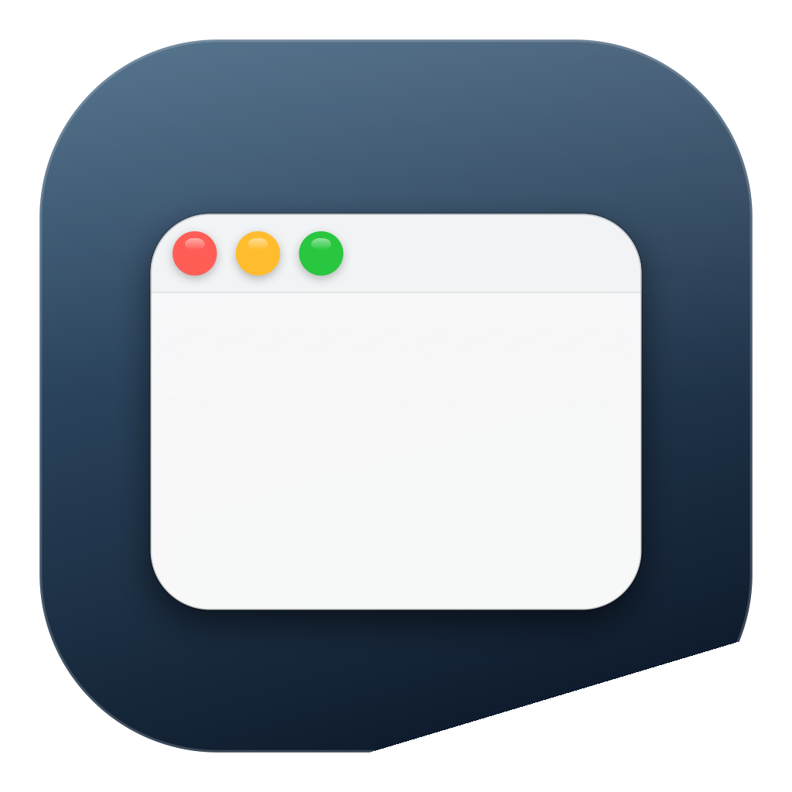
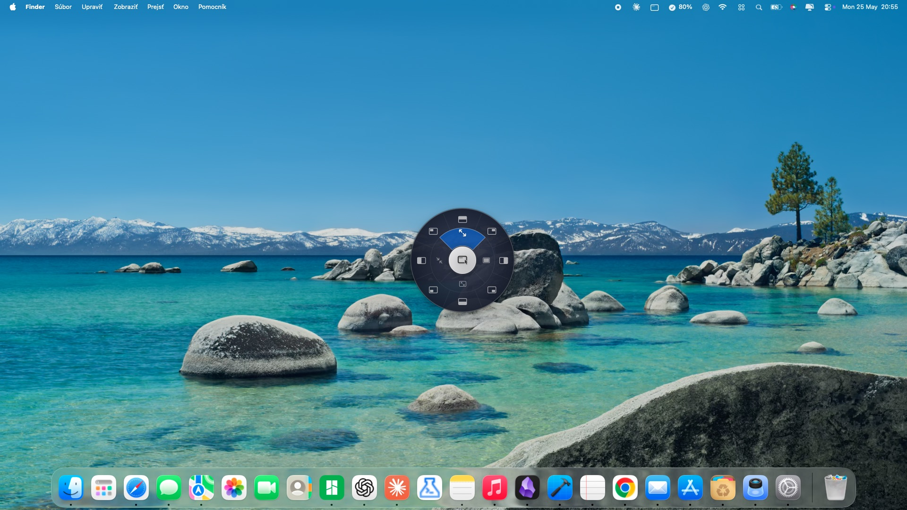
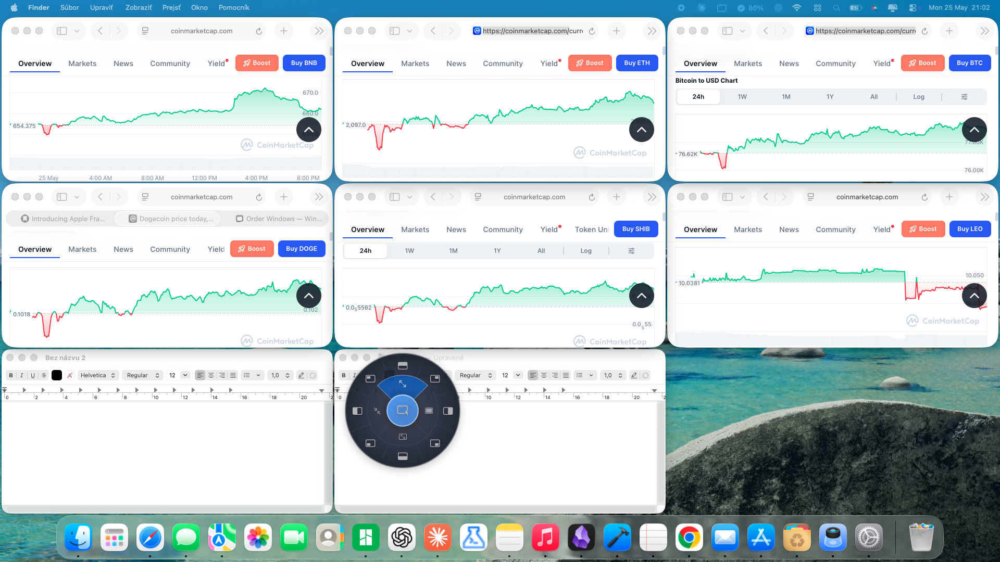
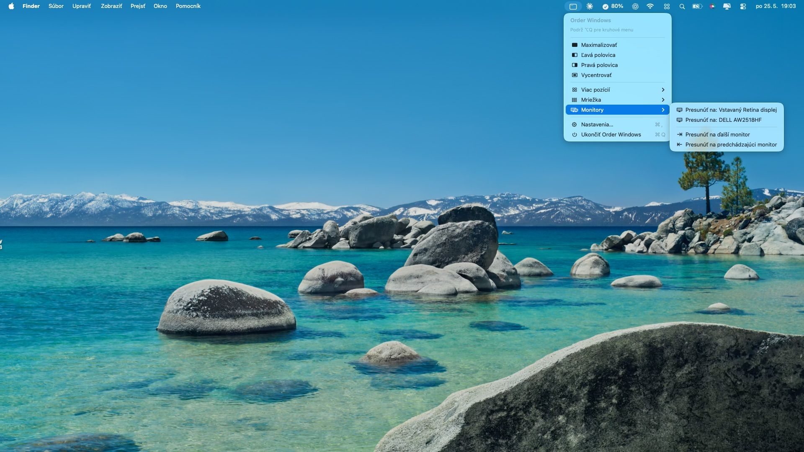

Order Windows
Window manager for macOS. Snap, shortcuts, radial menu.




17 keyboard shortcuts
Halves, corners, thirds, maximize, 3×3 grid cells. All rebindable.
3-zone radial menu
13 actions in one gesture. Center, middle ring, outer ring.
Snap on drag
Drag a window to any edge. Target glows. Release to snap.
Multi-monitor
Toast badge with display name. Auto-rescue when displays unplug.
Auto-arrange grids
2×2 to 4×4 presets. Balanced layout in one click.
Privacy first
No data collection, no tracking, no network. Local Accessibility API only.